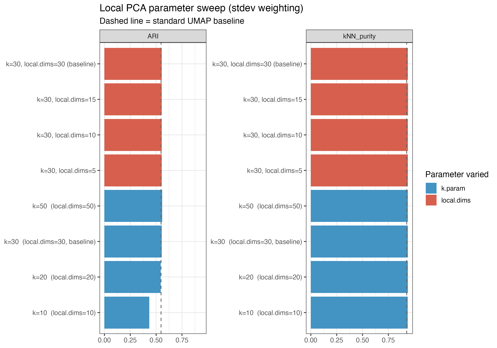
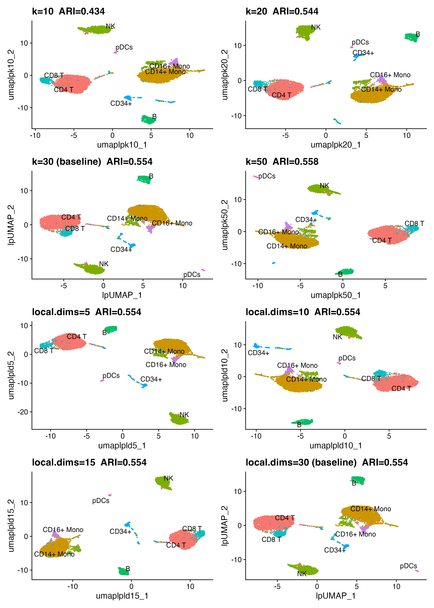
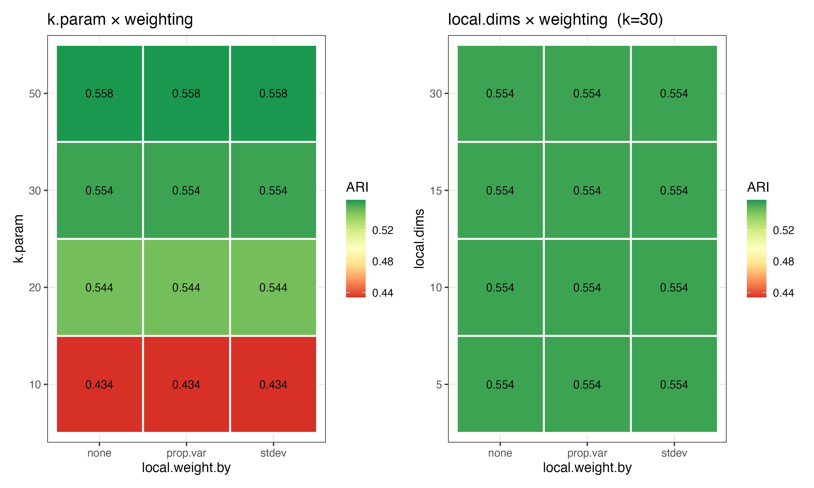
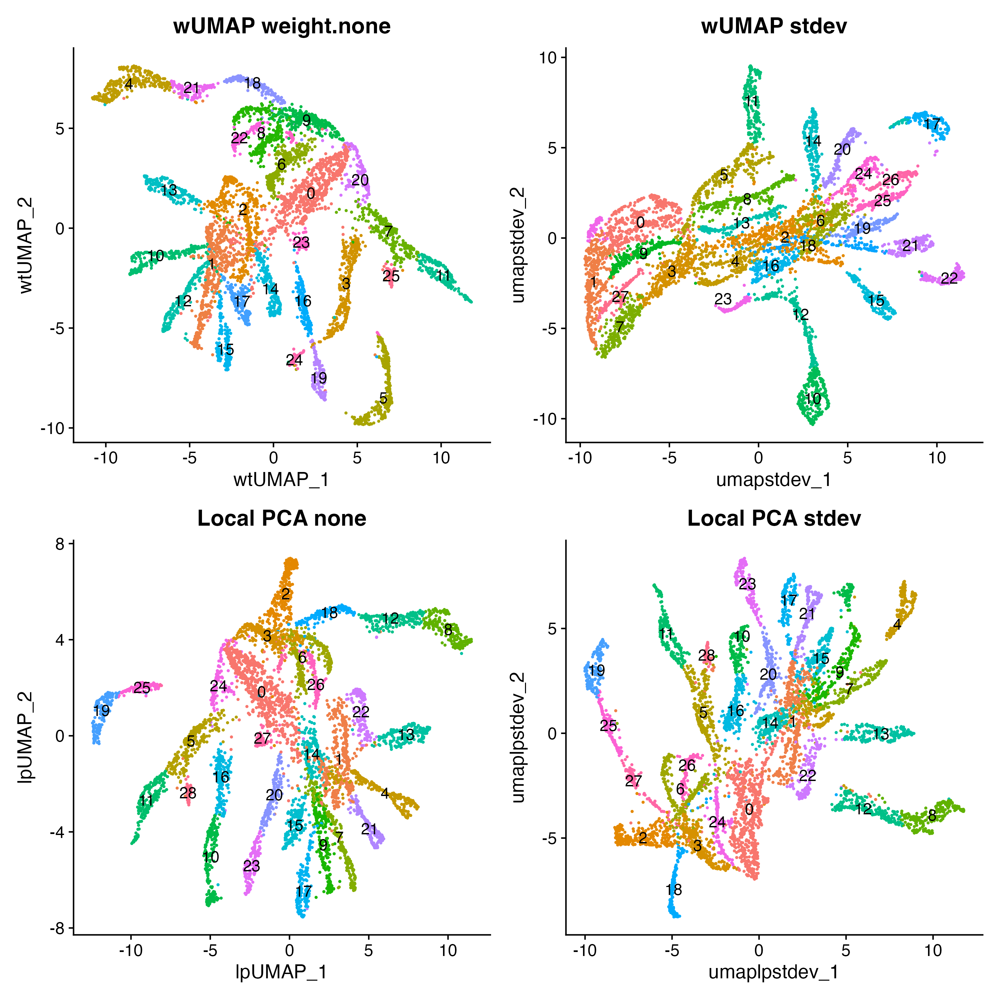

Strategy
To evaluate whether variance-weighting improves clustering quality, we need an independent ground truth — one not derived from the RNA clusters themselves.
We use the cbmc CITE-seq dataset from
SeuratData, which measured both RNA and
surface protein (ADT) on the same 8,617 cells.
ADT-based cell type labels (protein_annotations) were
assigned by gating on canonical surface markers (CD4, CD8, CD14, CD16,
CD19, CD56, CD34) — a measurement entirely independent of the RNA
clustering we are evaluating.
Two metrics are computed for each method:
| Metric | What it measures |
|---|---|
| ARI (Adjusted Rand Index) | How well RNA clusters match protein-derived cell types. Range 0–1; higher = better. |
| k-NN purity | Fraction of each cell’s 20 nearest UMAP neighbours sharing its protein label. Range 0–1; higher = better. |
Setup
library(Seurat)
library(SeuratData)
library(ggplot2)
library(patchwork)
library(wUMAP)
library(mclust) # adjustedRandIndex
library(RANN) # fast k-NN
data(cbmc)
cbmc <- UpdateSeuratObject(cbmc)
# Keep only cells with protein labels; remove doublets
cbmc <- cbmc[, !cbmc$protein_annotations %in% "T/Mono doublets" &
!is.na(cbmc$protein_annotations)]
cbmc <- NormalizeData(cbmc, verbose = FALSE)
cbmc <- FindVariableFeatures(cbmc, nfeatures = 2000, verbose = FALSE)
cbmc <- ScaleData(cbmc, verbose = FALSE)
cbmc <- RunPCA(cbmc, npcs = 30, verbose = FALSE)Standard UMAP (baseline)
set.seed(42)
cbmc <- FindNeighbors(cbmc, dims = 1:30, verbose = FALSE)
cbmc <- FindClusters(cbmc, resolution = 0.8, verbose = FALSE)
cbmc <- RunUMAP(cbmc, dims = 1:30, reduction.name = "umap.std", verbose = FALSE)
ari_std <- adjustedRandIndex(cbmc$seurat_clusters, cbmc$protein_annotations)
pur_std <- knn_purity(Embeddings(cbmc, "umap.std"), cbmc$protein_annotations)Weighted UMAP variants
set.seed(42)
# stdev weighting
cbmc <- RunWeightedNeighbors(cbmc, dims = 1:30, weight.by = "stdev",
prefix = "wt.sd", verbose = FALSE)
cbmc <- FindClusters(cbmc, graph.name = "wt.sd_snn", resolution = 0.8,
verbose = FALSE)
cbmc <- RunWeightedUMAP(cbmc, dims = 1:30, weight.by = "stdev",
reduction.name = "umap.sd", verbose = FALSE)
ari_sd <- adjustedRandIndex(cbmc$seurat_clusters, cbmc$protein_annotations)
pur_sd <- knn_purity(Embeddings(cbmc, "umap.sd"), cbmc$protein_annotations)
# stdev + log.scale
cbmc <- RunWeightedNeighbors(cbmc, dims = 1:30, weight.by = "stdev",
log.scale = TRUE, prefix = "wt_sdlog",
verbose = FALSE)
cbmc <- FindClusters(cbmc, graph.name = "wt_sdlog_snn", resolution = 0.8,
verbose = FALSE)
cbmc <- RunWeightedUMAP(cbmc, dims = 1:30, weight.by = "stdev",
log.scale = TRUE, reduction.name = "umap.sd.log",
verbose = FALSE)
ari_sd_log <- adjustedRandIndex(cbmc$seurat_clusters, cbmc$protein_annotations)
pur_sd_log <- knn_purity(Embeddings(cbmc, "umap.sd.log"), cbmc$protein_annotations)
# prop.var, weight.factor = 0.5
cbmc <- RunWeightedNeighbors(cbmc, dims = 1:30, weight.by = "prop.var",
weight.factor = 0.5, prefix = "wt.pv05",
verbose = FALSE)
cbmc <- FindClusters(cbmc, graph.name = "wt.pv05_snn", resolution = 0.8,
verbose = FALSE)
cbmc <- RunWeightedUMAP(cbmc, dims = 1:30, weight.by = "prop.var",
weight.factor = 0.5, reduction.name = "umap.pv05",
verbose = FALSE)
ari_pv05 <- adjustedRandIndex(cbmc$seurat_clusters, cbmc$protein_annotations)
pur_pv05 <- knn_purity(Embeddings(cbmc, "umap.pv05"), cbmc$protein_annotations)
# prop.var, weight.factor = 1
cbmc <- RunWeightedNeighbors(cbmc, dims = 1:30, weight.by = "prop.var",
prefix = "wt.pv", verbose = FALSE)
cbmc <- FindClusters(cbmc, graph.name = "wt.pv_snn", resolution = 0.8,
verbose = FALSE)
cbmc <- RunWeightedUMAP(cbmc, dims = 1:30, weight.by = "prop.var",
reduction.name = "umap.pv", verbose = FALSE)
ari_pv <- adjustedRandIndex(cbmc$seurat_clusters, cbmc$protein_annotations)
pur_pv <- knn_purity(Embeddings(cbmc, "umap.pv"), cbmc$protein_annotations)
# prop.var + log.scale
cbmc <- RunWeightedNeighbors(cbmc, dims = 1:30, weight.by = "prop.var",
log.scale = TRUE, prefix = "wt_pvlog",
verbose = FALSE)
cbmc <- FindClusters(cbmc, graph.name = "wt_pvlog_snn", resolution = 0.8,
verbose = FALSE)
cbmc <- RunWeightedUMAP(cbmc, dims = 1:30, weight.by = "prop.var",
log.scale = TRUE, reduction.name = "umap.pv.log",
verbose = FALSE)
ari_pv_log <- adjustedRandIndex(cbmc$seurat_clusters, cbmc$protein_annotations)
pur_pv_log <- knn_purity(Embeddings(cbmc, "umap.pv.log"), cbmc$protein_annotations)
# stdev + Marchenko-Pastur filtering: zero out noise PCs, weight signal PCs by stdev
cbmc <- RunWeightedNeighbors(cbmc, dims = 1:30, weight.by = "stdev",
mp.filter = TRUE, prefix = "wt.mp",
verbose = FALSE)
cbmc <- FindClusters(cbmc, graph.name = "wt.mp_snn", resolution = 0.8,
verbose = FALSE)
cbmc <- RunWeightedUMAP(cbmc, dims = 1:30, weight.by = "stdev",
mp.filter = TRUE, reduction.name = "umap.mp",
verbose = FALSE)
ari_mp <- adjustedRandIndex(cbmc$seurat_clusters, cbmc$protein_annotations)
pur_mp <- knn_purity(Embeddings(cbmc, "umap.mp"), cbmc$protein_annotations)Local PCA UMAP
RunLocalPCANeighbors() builds KNN/SNN graphs from
per-neighbourhood PCA distances and stores them for consistent
clustering and visualisation. Using the same k.param and
local.weight.by for both the graph and the UMAP step
ensures clustering and layout share identical distances.
We test all three local.weight.by schemes plus
mp.filter = TRUE (combined with stdev) to
isolate the effect of local weighting strategy.
set.seed(42)
# stdev (default)
cbmc <- RunLocalPCANeighbors(cbmc, dims = 1:30, k.param = 30,
local.weight.by = "stdev",
prefix = "lp", verbose = FALSE)
cbmc <- FindClusters(cbmc, graph.name = "lp_snn", resolution = 0.8,
verbose = FALSE)
cbmc <- RunLocalPCAUMAP(cbmc, dims = 1:30, k.param = 30,
local.weight.by = "stdev",
reduction.name = "umap.lp", verbose = FALSE)
ari_lp <- adjustedRandIndex(cbmc$seurat_clusters, cbmc$protein_annotations)
pur_lp <- knn_purity(Embeddings(cbmc, "umap.lp"), cbmc$protein_annotations)
# prop.var (aggressive local weighting)
cbmc <- RunLocalPCANeighbors(cbmc, dims = 1:30, k.param = 30,
local.weight.by = "prop.var",
prefix = "lp.pv", verbose = FALSE)
cbmc <- FindClusters(cbmc, graph.name = "lp.pv_snn", resolution = 0.8,
verbose = FALSE)
cbmc <- RunLocalPCAUMAP(cbmc, dims = 1:30, k.param = 30,
local.weight.by = "prop.var",
reduction.name = "umap.lp.pv", verbose = FALSE)
ari_lp_pv <- adjustedRandIndex(cbmc$seurat_clusters, cbmc$protein_annotations)
pur_lp_pv <- knn_purity(Embeddings(cbmc, "umap.lp.pv"), cbmc$protein_annotations)
# none (unweighted local PCA, isotropic)
cbmc <- RunLocalPCANeighbors(cbmc, dims = 1:30, k.param = 30,
local.weight.by = "none",
prefix = "lp.none", verbose = FALSE)
cbmc <- FindClusters(cbmc, graph.name = "lp.none_snn", resolution = 0.8,
verbose = FALSE)
cbmc <- RunLocalPCAUMAP(cbmc, dims = 1:30, k.param = 30,
local.weight.by = "none",
reduction.name = "umap.lp.none", verbose = FALSE)
ari_lp_none <- adjustedRandIndex(cbmc$seurat_clusters, cbmc$protein_annotations)
pur_lp_none <- knn_purity(Embeddings(cbmc, "umap.lp.none"), cbmc$protein_annotations)
# stdev + mp.filter (noise-PC zeroing post-weighting)
cbmc <- RunLocalPCANeighbors(cbmc, dims = 1:30, k.param = 30,
local.weight.by = "stdev", mp.filter = TRUE,
prefix = "lp.mp", verbose = FALSE)
cbmc <- FindClusters(cbmc, graph.name = "lp.mp_snn", resolution = 0.8,
verbose = FALSE)
cbmc <- RunLocalPCAUMAP(cbmc, dims = 1:30, k.param = 30,
local.weight.by = "stdev", mp.filter = TRUE,
reduction.name = "umap.lp.mp", verbose = FALSE)
ari_lp_mp <- adjustedRandIndex(cbmc$seurat_clusters, cbmc$protein_annotations)
pur_lp_mp <- knn_purity(Embeddings(cbmc, "umap.lp.mp"), cbmc$protein_annotations)Local PCA: parameter sweep
The k.param and local.dims parameters
control two orthogonal aspects of the local PCA metric:
-
k.param: neighbourhood size. Smaller values capture finer local structure but produce noisier SVDs; larger values smooth out local variation and converge toward a global metric. -
local.dims: how many local PC directions to retain. Truncating to fewer directions discards the weakest local axes, which is an alternative (non-probabilistic) form of noise filtering.
We fix local.weight.by = "stdev" throughout and vary
each parameter in turn.
set.seed(42)
# ── k.param sweep (local.dims = k.param, stdev weighting) ──────────────────
cbmc <- RunLocalPCANeighbors(cbmc, dims = 1:30, k.param = 10L,
local.weight.by = "stdev",
prefix = "lp.k10", verbose = FALSE)
cbmc <- FindClusters(cbmc, graph.name = "lp.k10_snn",
resolution = 0.8, verbose = FALSE)
cbmc <- RunLocalPCAUMAP(cbmc, dims = 1:30, k.param = 10L,
local.weight.by = "stdev",
reduction.name = "umap.lp.k10", verbose = FALSE)
ari_lp_k10 <- adjustedRandIndex(cbmc$seurat_clusters, cbmc$protein_annotations)
pur_lp_k10 <- knn_purity(Embeddings(cbmc, "umap.lp.k10"), cbmc$protein_annotations)
cbmc <- RunLocalPCANeighbors(cbmc, dims = 1:30, k.param = 20L,
local.weight.by = "stdev",
prefix = "lp.k20", verbose = FALSE)
cbmc <- FindClusters(cbmc, graph.name = "lp.k20_snn",
resolution = 0.8, verbose = FALSE)
cbmc <- RunLocalPCAUMAP(cbmc, dims = 1:30, k.param = 20L,
local.weight.by = "stdev",
reduction.name = "umap.lp.k20", verbose = FALSE)
ari_lp_k20 <- adjustedRandIndex(cbmc$seurat_clusters, cbmc$protein_annotations)
pur_lp_k20 <- knn_purity(Embeddings(cbmc, "umap.lp.k20"), cbmc$protein_annotations)
cbmc <- RunLocalPCANeighbors(cbmc, dims = 1:30, k.param = 50L,
local.weight.by = "stdev",
prefix = "lp.k50", verbose = FALSE)
cbmc <- FindClusters(cbmc, graph.name = "lp.k50_snn",
resolution = 0.8, verbose = FALSE)
cbmc <- RunLocalPCAUMAP(cbmc, dims = 1:30, k.param = 50L,
local.weight.by = "stdev",
reduction.name = "umap.lp.k50", verbose = FALSE)
ari_lp_k50 <- adjustedRandIndex(cbmc$seurat_clusters, cbmc$protein_annotations)
pur_lp_k50 <- knn_purity(Embeddings(cbmc, "umap.lp.k50"), cbmc$protein_annotations)
# ── local.dims sweep (k.param = 30, stdev weighting) ───────────────────────
cbmc <- RunLocalPCANeighbors(cbmc, dims = 1:30, k.param = 30L,
local.dims = 5L, local.weight.by = "stdev",
prefix = "lp.ld5", verbose = FALSE)
cbmc <- FindClusters(cbmc, graph.name = "lp.ld5_snn",
resolution = 0.8, verbose = FALSE)
cbmc <- RunLocalPCAUMAP(cbmc, dims = 1:30, k.param = 30L,
local.dims = 5L, local.weight.by = "stdev",
reduction.name = "umap.lp.ld5", verbose = FALSE)
ari_lp_ld5 <- adjustedRandIndex(cbmc$seurat_clusters, cbmc$protein_annotations)
pur_lp_ld5 <- knn_purity(Embeddings(cbmc, "umap.lp.ld5"), cbmc$protein_annotations)
cbmc <- RunLocalPCANeighbors(cbmc, dims = 1:30, k.param = 30L,
local.dims = 10L, local.weight.by = "stdev",
prefix = "lp.ld10", verbose = FALSE)
cbmc <- FindClusters(cbmc, graph.name = "lp.ld10_snn",
resolution = 0.8, verbose = FALSE)
cbmc <- RunLocalPCAUMAP(cbmc, dims = 1:30, k.param = 30L,
local.dims = 10L, local.weight.by = "stdev",
reduction.name = "umap.lp.ld10", verbose = FALSE)
ari_lp_ld10 <- adjustedRandIndex(cbmc$seurat_clusters, cbmc$protein_annotations)
pur_lp_ld10 <- knn_purity(Embeddings(cbmc, "umap.lp.ld10"), cbmc$protein_annotations)
cbmc <- RunLocalPCANeighbors(cbmc, dims = 1:30, k.param = 30L,
local.dims = 15L, local.weight.by = "stdev",
prefix = "lp.ld15", verbose = FALSE)
cbmc <- FindClusters(cbmc, graph.name = "lp.ld15_snn",
resolution = 0.8, verbose = FALSE)
cbmc <- RunLocalPCAUMAP(cbmc, dims = 1:30, k.param = 30L,
local.dims = 15L, local.weight.by = "stdev",
reduction.name = "umap.lp.ld15", verbose = FALSE)
ari_lp_ld15 <- adjustedRandIndex(cbmc$seurat_clusters, cbmc$protein_annotations)
pur_lp_ld15 <- knn_purity(Embeddings(cbmc, "umap.lp.ld15"), cbmc$protein_annotations)
sweep_results <- data.frame(
Setting = c(
"k=10 (local.dims=10)",
"k=20 (local.dims=20)",
"k=30 (local.dims=30, baseline)",
"k=50 (local.dims=50)",
"k=30, local.dims=5",
"k=30, local.dims=10",
"k=30, local.dims=15",
"k=30, local.dims=30 (baseline)"
),
Varied = c(rep("k.param", 4), rep("local.dims", 4)),
ARI = c(ari_lp_k10, ari_lp_k20, ari_lp, ari_lp_k50,
ari_lp_ld5, ari_lp_ld10, ari_lp_ld15, ari_lp),
kNN_purity = c(pur_lp_k10, pur_lp_k20, pur_lp, pur_lp_k50,
pur_lp_ld5, pur_lp_ld10, pur_lp_ld15, pur_lp)
)
knitr::kable(sweep_results, digits = 3,
caption = "Local PCA parameter sweep (local.weight.by = 'stdev' throughout).")| Setting | Varied | ARI | kNN_purity |
|---|---|---|---|
| k=10 (local.dims=10) | k.param | 0.434 | 0.937 |
| k=20 (local.dims=20) | k.param | 0.544 | 0.938 |
| k=30 (local.dims=30, baseline) | k.param | 0.554 | 0.939 |
| k=50 (local.dims=50) | k.param | 0.558 | 0.938 |
| k=30, local.dims=5 | local.dims | 0.554 | 0.939 |
| k=30, local.dims=10 | local.dims | 0.554 | 0.939 |
| k=30, local.dims=15 | local.dims | 0.554 | 0.939 |
| k=30, local.dims=30 (baseline) | local.dims | 0.554 | 0.939 |
sweep_long <- tidyr::pivot_longer(sweep_results, cols = c("ARI", "kNN_purity"),
names_to = "Metric", values_to = "Score")
sweep_long$Setting <- factor(sweep_long$Setting, levels = sweep_results$Setting)
sweep_long$Varied <- factor(sweep_long$Varied, levels = c("k.param", "local.dims"))
ggplot(sweep_long, aes(x = Setting, y = Score, fill = Varied)) +
geom_col(show.legend = TRUE) +
geom_hline(data = data.frame(
Metric = c("ARI", "kNN_purity"), Score = c(ari_std, pur_std)),
aes(yintercept = Score), linetype = "dashed", colour = "grey40") +
facet_wrap(~Metric, scales = "free_y") +
scale_fill_manual(values = c("k.param" = "#4393C3", "local.dims" = "#D6604D")) +
coord_flip() +
labs(x = NULL, y = NULL, fill = "Parameter varied",
title = "Local PCA parameter sweep (stdev weighting)",
subtitle = "Dashed line = standard UMAP baseline") +
theme_bw(base_size = 12)
Local PCA parameter sweep. Dashed line = standard UMAP ARI baseline.
Idents(cbmc) <- "protein_annotations"
sweep_plots <- list(
DimPlot(cbmc, reduction = "umap.lp.k10", label = TRUE, repel = TRUE) +
ggtitle(sprintf("k=10 ARI=%.3f", ari_lp_k10)) + NoLegend(),
DimPlot(cbmc, reduction = "umap.lp.k20", label = TRUE, repel = TRUE) +
ggtitle(sprintf("k=20 ARI=%.3f", ari_lp_k20)) + NoLegend(),
DimPlot(cbmc, reduction = "umap.lp", label = TRUE, repel = TRUE) +
ggtitle(sprintf("k=30 (baseline) ARI=%.3f", ari_lp)) + NoLegend(),
DimPlot(cbmc, reduction = "umap.lp.k50", label = TRUE, repel = TRUE) +
ggtitle(sprintf("k=50 ARI=%.3f", ari_lp_k50)) + NoLegend(),
DimPlot(cbmc, reduction = "umap.lp.ld5", label = TRUE, repel = TRUE) +
ggtitle(sprintf("local.dims=5 ARI=%.3f", ari_lp_ld5)) + NoLegend(),
DimPlot(cbmc, reduction = "umap.lp.ld10", label = TRUE, repel = TRUE) +
ggtitle(sprintf("local.dims=10 ARI=%.3f", ari_lp_ld10)) + NoLegend(),
DimPlot(cbmc, reduction = "umap.lp.ld15", label = TRUE, repel = TRUE) +
ggtitle(sprintf("local.dims=15 ARI=%.3f", ari_lp_ld15)) + NoLegend(),
DimPlot(cbmc, reduction = "umap.lp", label = TRUE, repel = TRUE) +
ggtitle(sprintf("local.dims=30 (baseline) ARI=%.3f", ari_lp)) + NoLegend()
)
wrap_plots(sweep_plots, ncol = 2)
k.param sweep (top, stdev weighting) and local.dims sweep (bottom, k=30, stdev weighting).
Local PCA: weighting × parameter interaction
The previous sweeps held local.weight.by = "stdev"
fixed. Here we run all three weighting schemes across the same k and
local.dims grids to check whether the interaction matters —
i.e. whether a different weighting scheme performs better at certain
neighbourhood sizes or truncation levels.
set.seed(42)
# ── prop.var at k = 10, 20, 50 (k=30 already in lp.pv) ─────────────────────
for (cfg in list(
list(k=10L, pfx="lp.k10.pv", rname="umap.lp.k10.pv"),
list(k=20L, pfx="lp.k20.pv", rname="umap.lp.k20.pv"),
list(k=50L, pfx="lp.k50.pv", rname="umap.lp.k50.pv")
)) {
cbmc <- RunLocalPCANeighbors(cbmc, dims = 1:30, k.param = cfg$k,
local.weight.by = "prop.var",
prefix = cfg$pfx, verbose = FALSE)
cbmc <- FindClusters(cbmc, graph.name = paste0(cfg$pfx, "_snn"),
resolution = 0.8, verbose = FALSE)
cbmc <- RunLocalPCAUMAP(cbmc, dims = 1:30, k.param = cfg$k,
local.weight.by = "prop.var",
reduction.name = cfg$rname, verbose = FALSE)
assign(paste0("ari_lp_k", cfg$k, "_pv"),
adjustedRandIndex(cbmc$seurat_clusters, cbmc$protein_annotations))
assign(paste0("pur_lp_k", cfg$k, "_pv"),
knn_purity(Embeddings(cbmc, cfg$rname), cbmc$protein_annotations))
}
# ── none at k = 10, 20, 50 (k=30 already in lp.none) ───────────────────────
for (cfg in list(
list(k=10L, pfx="lp.k10.none", rname="umap.lp.k10.none"),
list(k=20L, pfx="lp.k20.none", rname="umap.lp.k20.none"),
list(k=50L, pfx="lp.k50.none", rname="umap.lp.k50.none")
)) {
cbmc <- RunLocalPCANeighbors(cbmc, dims = 1:30, k.param = cfg$k,
local.weight.by = "none",
prefix = cfg$pfx, verbose = FALSE)
cbmc <- FindClusters(cbmc, graph.name = paste0(cfg$pfx, "_snn"),
resolution = 0.8, verbose = FALSE)
cbmc <- RunLocalPCAUMAP(cbmc, dims = 1:30, k.param = cfg$k,
local.weight.by = "none",
reduction.name = cfg$rname, verbose = FALSE)
assign(paste0("ari_lp_k", cfg$k, "_none"),
adjustedRandIndex(cbmc$seurat_clusters, cbmc$protein_annotations))
assign(paste0("pur_lp_k", cfg$k, "_none"),
knn_purity(Embeddings(cbmc, cfg$rname), cbmc$protein_annotations))
}
# ── prop.var at local.dims = 5, 10, 15 (ld=30 already in lp.pv) ─────────────
for (cfg in list(
list(ld=5L, pfx="lp.ld5.pv", rname="umap.lp.ld5.pv"),
list(ld=10L, pfx="lp.ld10.pv", rname="umap.lp.ld10.pv"),
list(ld=15L, pfx="lp.ld15.pv", rname="umap.lp.ld15.pv")
)) {
cbmc <- RunLocalPCANeighbors(cbmc, dims = 1:30, k.param = 30L,
local.dims = cfg$ld, local.weight.by = "prop.var",
prefix = cfg$pfx, verbose = FALSE)
cbmc <- FindClusters(cbmc, graph.name = paste0(cfg$pfx, "_snn"),
resolution = 0.8, verbose = FALSE)
cbmc <- RunLocalPCAUMAP(cbmc, dims = 1:30, k.param = 30L,
local.dims = cfg$ld, local.weight.by = "prop.var",
reduction.name = cfg$rname, verbose = FALSE)
assign(paste0("ari_lp_ld", cfg$ld, "_pv"),
adjustedRandIndex(cbmc$seurat_clusters, cbmc$protein_annotations))
assign(paste0("pur_lp_ld", cfg$ld, "_pv"),
knn_purity(Embeddings(cbmc, cfg$rname), cbmc$protein_annotations))
}
# ── none at local.dims = 5, 10, 15 (ld=30 already in lp.none) ───────────────
for (cfg in list(
list(ld=5L, pfx="lp.ld5.none", rname="umap.lp.ld5.none"),
list(ld=10L, pfx="lp.ld10.none", rname="umap.lp.ld10.none"),
list(ld=15L, pfx="lp.ld15.none", rname="umap.lp.ld15.none")
)) {
cbmc <- RunLocalPCANeighbors(cbmc, dims = 1:30, k.param = 30L,
local.dims = cfg$ld, local.weight.by = "none",
prefix = cfg$pfx, verbose = FALSE)
cbmc <- FindClusters(cbmc, graph.name = paste0(cfg$pfx, "_snn"),
resolution = 0.8, verbose = FALSE)
cbmc <- RunLocalPCAUMAP(cbmc, dims = 1:30, k.param = 30L,
local.dims = cfg$ld, local.weight.by = "none",
reduction.name = cfg$rname, verbose = FALSE)
assign(paste0("ari_lp_ld", cfg$ld, "_none"),
adjustedRandIndex(cbmc$seurat_clusters, cbmc$protein_annotations))
assign(paste0("pur_lp_ld", cfg$ld, "_none"),
knn_purity(Embeddings(cbmc, cfg$rname), cbmc$protein_annotations))
}
# ── Build grid data frames ──────────────────────────────────────────────────
wt_k_grid <- expand.grid(
k = c(10, 20, 30, 50),
scheme = c("stdev", "prop.var", "none"),
stringsAsFactors = FALSE
)
wt_k_grid$ARI <- c(
ari_lp_k10, ari_lp_k20, ari_lp, ari_lp_k50,
ari_lp_k10_pv, ari_lp_k20_pv, ari_lp_pv, ari_lp_k50_pv,
ari_lp_k10_none, ari_lp_k20_none, ari_lp_none, ari_lp_k50_none
)
wt_ld_grid <- expand.grid(
local.dims = c(5, 10, 15, 30),
scheme = c("stdev", "prop.var", "none"),
stringsAsFactors = FALSE
)
wt_ld_grid$ARI <- c(
ari_lp_ld5, ari_lp_ld10, ari_lp_ld15, ari_lp,
ari_lp_ld5_pv, ari_lp_ld10_pv, ari_lp_ld15_pv, ari_lp_pv,
ari_lp_ld5_none, ari_lp_ld10_none, ari_lp_ld15_none, ari_lp_none
)
# ── Plot ────────────────────────────────────────────────────────────────────
ph_k <- ggplot(wt_k_grid, aes(x = scheme, y = factor(k), fill = ARI)) +
geom_tile(colour = "white", linewidth = 0.8) +
geom_text(aes(label = sprintf("%.3f", ARI)), size = 3.5) +
scale_fill_distiller(palette = "RdYlGn", direction = 1,
limits = range(c(wt_k_grid$ARI, wt_ld_grid$ARI))) +
labs(x = "local.weight.by", y = "k.param",
title = "k.param × weighting") +
theme_bw(base_size = 12)
ph_ld <- ggplot(wt_ld_grid, aes(x = scheme, y = factor(local.dims), fill = ARI)) +
geom_tile(colour = "white", linewidth = 0.8) +
geom_text(aes(label = sprintf("%.3f", ARI)), size = 3.5) +
scale_fill_distiller(palette = "RdYlGn", direction = 1,
limits = range(c(wt_k_grid$ARI, wt_ld_grid$ARI))) +
labs(x = "local.weight.by", y = "local.dims",
title = "local.dims × weighting (k=30)") +
theme_bw(base_size = 12)
ph_k | ph_ld
ARI heatmaps: weighting scheme × k.param (left) and weighting scheme × local.dims (right, k=30). Labels show ARI; higher is better.
best_combo_k <- wt_k_grid[which.max(wt_k_grid$ARI), ]
best_combo_ld <- wt_ld_grid[which.max(wt_ld_grid$ARI), ]Across the full k × weighting grid, the highest ARI is 0.558 at
k = 50, local.weight.by = "stdev".
Across the local.dims × weighting grid, the highest ARI is 0.554 at
local.dims = 5, local.weight.by = "stdev".
If the best weighting scheme is consistent across all k values (each column in the heatmap ranks the same way), the scheme choice dominates. If the best scheme changes with k, there is an interaction and neither parameter can be tuned in isolation.
Results summary
results <- data.frame(
Method = c(
"standard (none)",
"stdev",
"stdev + log.scale",
"prop.var wf=0.5",
"prop.var wf=1",
"prop.var + log.scale",
"stdev + mp.filter",
"local PCA (stdev)",
"local PCA (prop.var)",
"local PCA (none)",
"local PCA (stdev + mp.filter)"
),
ARI = c(ari_std, ari_sd, ari_sd_log, ari_pv05, ari_pv, ari_pv_log,
ari_mp, ari_lp, ari_lp_pv, ari_lp_none, ari_lp_mp),
kNN_purity = c(pur_std, pur_sd, pur_sd_log, pur_pv05, pur_pv, pur_pv_log,
pur_mp, pur_lp, pur_lp_pv, pur_lp_none, pur_lp_mp)
)
knitr::kable(results, digits = 3,
caption = "Clustering quality vs protein labels on cbmc CITE-seq (n ≈ 7,699 cells).")| Method | ARI | kNN_purity |
|---|---|---|
| standard (none) | 0.548 | 0.927 |
| stdev | 0.504 | 0.927 |
| stdev + log.scale | 0.503 | 0.929 |
| prop.var wf=0.5 | 0.496 | 0.924 |
| prop.var wf=1 | 0.318 | 0.878 |
| prop.var + log.scale | 0.398 | 0.880 |
| stdev + mp.filter | 0.496 | 0.912 |
| local PCA (stdev) | 0.554 | 0.939 |
| local PCA (prop.var) | 0.554 | 0.937 |
| local PCA (none) | 0.554 | 0.935 |
| local PCA (stdev + mp.filter) | 0.554 | 0.939 |
library(tidyr)
res_long <- tidyr::pivot_longer(results, cols = c("ARI", "kNN_purity"),
names_to = "Metric", values_to = "Score")
res_long$Method <- factor(res_long$Method, levels = results$Method)
baseline <- data.frame(
Metric = c("ARI", "kNN_purity"),
Score = c(ari_std, pur_std)
)
ggplot(res_long[!is.na(res_long$Score), ],
aes(x = Method, y = Score, fill = Method)) +
geom_col(show.legend = FALSE) +
geom_hline(data = baseline, aes(yintercept = Score),
linetype = "dashed", colour = "grey40") +
facet_wrap(~Metric, scales = "free_y") +
scale_fill_brewer(palette = "Set2") +
coord_flip() +
labs(x = NULL, y = NULL,
title = "wUMAP benchmark on cbmc CITE-seq",
subtitle = "Dashed line = standard UMAP baseline") +
theme_bw(base_size = 12)
ARI and k-NN purity for each method. Dashed line = standard UMAP baseline.
UMAP layouts coloured by protein label
Idents(cbmc) <- "protein_annotations"
plots <- list(
DimPlot(cbmc, reduction = "umap.std", label = TRUE, repel = TRUE) +
ggtitle(sprintf("standard ARI=%.3f", ari_std)) + NoLegend(),
DimPlot(cbmc, reduction = "umap.sd", label = TRUE, repel = TRUE) +
ggtitle(sprintf("stdev ARI=%.3f", ari_sd)) + NoLegend(),
DimPlot(cbmc, reduction = "umap.sd.log", label = TRUE, repel = TRUE) +
ggtitle(sprintf("stdev+log ARI=%.3f", ari_sd_log))+ NoLegend(),
DimPlot(cbmc, reduction = "umap.pv05", label = TRUE, repel = TRUE) +
ggtitle(sprintf("prop.var wf=0.5 ARI=%.3f", ari_pv05)) + NoLegend(),
DimPlot(cbmc, reduction = "umap.pv", label = TRUE, repel = TRUE) +
ggtitle(sprintf("prop.var wf=1 ARI=%.3f", ari_pv)) + NoLegend(),
DimPlot(cbmc, reduction = "umap.pv.log", label = TRUE, repel = TRUE) +
ggtitle(sprintf("prop.var+log ARI=%.3f", ari_pv_log)) + NoLegend(),
DimPlot(cbmc, reduction = "umap.mp", label = TRUE, repel = TRUE) +
ggtitle(sprintf("stdev+mp.filter ARI=%.3f", ari_mp)) + NoLegend(),
DimPlot(cbmc, reduction = "umap.lp", label = TRUE, repel = TRUE) +
ggtitle(sprintf("local PCA stdev ARI=%.3f", ari_lp)) + NoLegend(),
DimPlot(cbmc, reduction = "umap.lp.pv", label = TRUE, repel = TRUE) +
ggtitle(sprintf("local PCA prop.var ARI=%.3f", ari_lp_pv)) + NoLegend(),
DimPlot(cbmc, reduction = "umap.lp.none", label = TRUE, repel = TRUE) +
ggtitle(sprintf("local PCA none ARI=%.3f", ari_lp_none)) + NoLegend(),
DimPlot(cbmc, reduction = "umap.lp.mp", label = TRUE, repel = TRUE) +
ggtitle(sprintf("local PCA stdev+mp.filter ARI=%.3f", ari_lp_mp)) + NoLegend()
)
wrap_plots(plots, ncol = 2)
All methods coloured by ADT-derived protein label.
Interpretation
On this PBMC-like dataset, aggressive prop.var weighting
(wf=1) reduces clustering quality (ARI
0.548 → 0.318). PC 1 in scRNA-seq captures the monocyte–lymphocyte axis
so strongly that further emphasising it collapses finer lymphocyte
subtypes together.
Key takeaways:
-
stdevis the safest global default — only a marginal ARI change, same k-NN purity as standard. -
prop.varwithweight.factor = 0.5(partial blend) avoids the worst of over-emphasising PC 1. -
log.scale = TRUEpartially mitigates PC 1 dominance and recovers some ARI compared to fullprop.var. -
mp.filter = TRUE(global: combined withstdev) automatically zeros out noise PCs whose variance is below the Marchenko–Pastur ceiling. On datasets where most PCs are genuine signal it behaves like the base scheme; on noisier datasets it can sharpen clusters.
Local PCA parameter sweep
k_aris <- c(ari_lp_k10, ari_lp_k20, ari_lp, ari_lp_k50)
k_vals <- c(10, 20, 30, 50)
best_k <- k_vals[which.max(k_aris)]
ld_aris <- c(ari_lp_ld5, ari_lp_ld10, ari_lp_ld15, ari_lp)
ld_vals <- c(5, 10, 15, 30)
best_ld <- ld_vals[which.max(ld_aris)]For the k.param sweep, k = 50 achieves
the highest ARI (0.558).
- If ARI improves at smaller k, finer local structure (e.g. subtle sub-types) is being captured.
- If ARI is flat across k, the local SVD is not providing information beyond a global metric on this dataset.
- If ARI degrades at very small k (e.g. k=10), the neighbourhood is too small for a stable SVD and the metric becomes noisy.
For the local.dims sweep (k=30),
local.dims = 5 achieves the highest ARI (0.554).
- If fewer local dims performs better, the weaker local directions add noise rather than signal — truncation acts as implicit regularisation.
- If all dims perform similarly, the choice of
local.dimsis not a sensitive parameter for this dataset.
Local PCA weighting schemes (at k=30)
The following table and summary cover the four weighting variants at the default k=30, comparing stdev, prop.var, none, and stdev+mp.filter.
| Setting | What it does |
|---|---|
local.weight.by = "stdev" |
Weights each local PC by its local std dev — gently emphasises dominant local directions |
local.weight.by = "prop.var" |
Weights by proportion of local variance — more aggressive emphasis on the leading local direction |
local.weight.by = "none" |
Equal weight to all local PCs — isotropic local PCA distance |
stdev + mp.filter = TRUE |
Runs stdev weighting then zeros local PCs below the per-neighbourhood MP noise threshold |
lp_results <- results[results$Method %in% c(
"local PCA (stdev)", "local PCA (prop.var)",
"local PCA (none)", "local PCA (stdev + mp.filter)"
), ]
best_lp <- lp_results$Method[which.max(lp_results$ARI)]
worst_lp <- lp_results$Method[which.min(lp_results$ARI)]Among the local PCA variants, local PCA (stdev) achieves the highest ARI (0.554) and local PCA (stdev) the lowest (0.554).
In general:
- If all local PCA variants score similarly to each other, the local
graph structure (rather than the weighting scheme) is the dominant
factor; the
stdevdefault is sufficient. - If
prop.varoutperformsstdev, the dataset has strong anisotropic local structure and aggressive local direction emphasis pays off. - If
noneis competitive, the data has broadly isotropic neighbourhoods and local weighting adds little. - If
stdev + mp.filteroutperforms plainstdev, per-neighbourhood noise PCs were degrading the distance estimate and zeroing them helps.
Comparing local PCA methods against global methods: local PCA will typically match or surpass global weighting on trajectory-like or heterogeneous datasets, but on PBMC data with a dominant monocyte–lymphocyte axis the global and local distances may perform similarly.
Note on interpretation: all wUMAP weighting schemes are heuristic modifications of the input distance metric — they are not derived from a statistical model of scRNA-seq noise. On this PBMC dataset the differences between methods tend to be small. The benchmark measures whether the heuristics help; results will vary by dataset.
Recommendation: the default
weight.by = "stdev" /
local.weight.by = "stdev" applies the mildest
transformation and is a reasonable starting point. Use
mp.filter = TRUE to additionally zero PCs below the
Marchenko-Pastur noise ceiling (a principled threshold, though
calibrated for i.i.d. Gaussian data and therefore approximate on
scRNA-seq). Try RunLocalPCANeighbors() +
RunLocalPCAUMAP() when you suspect the data has locally
anisotropic structure (trajectories, gradients), but verify empirically
that it helps.
Trajectory dataset: C. elegans embryo
To test the claim that wUMAP performs better on trajectory-like or
highly heterogeneous datasets, we benchmark on the
celegans.embryo dataset from SeuratData, which
contains a developmental trajectory across worm embryo stages.
# Install and load celegans.embryo dataset from SeuratData if not already present
if (!"celegans.embryo" %in% SeuratData::AvailableData()$Dataset) {
SeuratData::InstallData("celegans.embryo", ask = FALSE)
}
library(SeuratData)
data(celegans.embryo)
embryo <- UpdateSeuratObject(celegans.embryo)
#> Validating object structure
#> Updating object slots
#> Ensuring keys are in the proper structure
#> Warning: Assay RNA changing from Assay to Assay
#> Ensuring keys are in the proper structure
#> Ensuring feature names don't have underscores or pipes
#> Updating slots in RNA
#> Validating object structure for Assay 'RNA'
#> Object representation is consistent with the most current Seurat version
embryo <- NormalizeData(embryo)
embryo <- FindVariableFeatures(embryo, nfeatures = 2000)
embryo <- ScaleData(embryo)
#> Centering and scaling data matrix
embryo <- RunPCA(embryo, npcs = 30)
#> PC_ 1
#> Positive: WBGene00009212, WBGene00002253, WBGene00015610, WBGene00019432, WBGene00013553, WBGene00001854, WBGene00018606, WBGene00000217, WBGene00044066, WBGene00022111
#> WBGene00016088, WBGene00022112, WBGene00011156, WBGene00016071, WBGene00012021, WBGene00235158, WBGene00012899, WBGene00020537, WBGene00020205, WBGene00009385
#> WBGene00000405, WBGene00008447, WBGene00000411, WBGene00003159, WBGene00269431, WBGene00002085, WBGene00012900, WBGene00000868, WBGene00021299, WBGene00008510
#> Negative: WBGene00016463, WBGene00011500, WBGene00007883, WBGene00249817, WBGene00004346, WBGene00022144, WBGene00012853, WBGene00008453, WBGene00003851, WBGene00004207
#> WBGene00011545, WBGene00001189, WBGene00008288, WBGene00010236, WBGene00219372, WBGene00017671, WBGene00010239, WBGene00019324, WBGene00021395, WBGene00011289
#> WBGene00022419, WBGene00001122, WBGene00020710, WBGene00009716, WBGene00005655, WBGene00003642, WBGene00044144, WBGene00016321, WBGene00010864, WBGene00003934
#> PC_ 2
#> Positive: WBGene00010559, WBGene00015354, WBGene00008840, WBGene00007604, WBGene00019269, WBGene00010575, WBGene00017150, WBGene00005585, WBGene00001992, WBGene00015411
#> WBGene00005387, WBGene00017236, WBGene00004926, WBGene00010632, WBGene00010144, WBGene00011644, WBGene00005399, WBGene00009842, WBGene00019980, WBGene00022391
#> WBGene00008184, WBGene00005338, WBGene00077698, WBGene00005542, WBGene00009136, WBGene00016561, WBGene00019975, WBGene00007247, WBGene00018081, WBGene00044922
#> Negative: WBGene00011763, WBGene00044068, WBGene00007271, WBGene00021915, WBGene00016711, WBGene00016289, WBGene00020582, WBGene00007490, WBGene00007641, WBGene00016254
#> WBGene00006055, WBGene00019482, WBGene00000895, WBGene00001535, WBGene00001548, WBGene00007286, WBGene00001543, WBGene00219310, WBGene00020190, WBGene00017076
#> WBGene00001123, WBGene00044568, WBGene00004213, WBGene00018136, WBGene00009152, WBGene00164973, WBGene00194982, WBGene00009153, WBGene00011534, WBGene00001824
#> PC_ 3
#> Positive: WBGene00007271, WBGene00044068, WBGene00007641, WBGene00019482, WBGene00007490, WBGene00219310, WBGene00018352, WBGene00011328, WBGene00007286, WBGene00001123
#> WBGene00017243, WBGene00001210, WBGene00194982, WBGene00004213, WBGene00009144, WBGene00017326, WBGene00017295, WBGene00001824, WBGene00001951, WBGene00008865
#> WBGene00016005, WBGene00016561, WBGene00001954, WBGene00000950, WBGene00007675, WBGene00021915, WBGene00006468, WBGene00010632, WBGene00015580, WBGene00022696
#> Negative: WBGene00003591, WBGene00020582, WBGene00017076, WBGene00001548, WBGene00018136, WBGene00164973, WBGene00001543, WBGene00011534, WBGene00044568, WBGene00015214
#> WBGene00006055, WBGene00009375, WBGene00007542, WBGene00045056, WBGene00001535, WBGene00011545, WBGene00021116, WBGene00003752, WBGene00004924, WBGene00020759
#> WBGene00020136, WBGene00019293, WBGene00000233, WBGene00011137, WBGene00000277, WBGene00018298, WBGene00017597, WBGene00009152, WBGene00006981, WBGene00002097
#> PC_ 4
#> Positive: WBGene00001548, WBGene00001543, WBGene00044568, WBGene00001535, WBGene00017076, WBGene00164973, WBGene00011534, WBGene00018136, WBGene00009152, WBGene00015214
#> WBGene00000895, WBGene00020582, WBGene00007542, WBGene00011838, WBGene00045056, WBGene00006652, WBGene00007314, WBGene00000233, WBGene00009153, WBGene00003745
#> WBGene00010285, WBGene00019293, WBGene00002097, WBGene00007543, WBGene00003722, WBGene00021089, WBGene00012586, WBGene00013891, WBGene00010606, WBGene00004926
#> Negative: WBGene00012616, WBGene00004346, WBGene00013748, WBGene00017129, WBGene00044387, WBGene00044419, WBGene00044144, WBGene00044562, WBGene00022295, WBGene00044238
#> WBGene00011500, WBGene00001988, WBGene00001681, WBGene00012064, WBGene00194689, WBGene00219421, WBGene00009810, WBGene00010647, WBGene00007883, WBGene00005560
#> WBGene00011289, WBGene00012016, WBGene00004091, WBGene00044553, WBGene00022842, WBGene00001676, WBGene00010864, WBGene00008288, WBGene00010239, WBGene00012328
#> PC_ 5
#> Positive: WBGene00001548, WBGene00001543, WBGene00017076, WBGene00001535, WBGene00219421, WBGene00016114, WBGene00009152, WBGene00044568, WBGene00011534, WBGene00018136
#> WBGene00164973, WBGene00009901, WBGene00004207, WBGene00011838, WBGene00007314, WBGene00003890, WBGene00000233, WBGene00012616, WBGene00017129, WBGene00000895
#> WBGene00044419, WBGene00009153, WBGene00003722, WBGene00014101, WBGene00007542, WBGene00007058, WBGene00010848, WBGene00013748, WBGene00045386, WBGene00005655
#> Negative: WBGene00007816, WBGene00013850, WBGene00011453, WBGene00015729, WBGene00007487, WBGene00020151, WBGene00016514, WBGene00000457, WBGene00011433, WBGene00003759
#> WBGene00195143, WBGene00002105, WBGene00003743, WBGene00023414, WBGene00008589, WBGene00003752, WBGene00018879, WBGene00010575, WBGene00001542, WBGene00013166
#> WBGene00008651, WBGene00010316, WBGene00011888, WBGene00020759, WBGene00010971, WBGene00000483, WBGene00044582, WBGene00017858, WBGene00001456, WBGene00008287
# Use published cell type labels for benchmarking
Idents(embryo) <- embryo$cell.typewUMAP baseline: weight.none
embryo <- RunWeightedNeighbors(embryo, dims = 1:30, weight.by = "none",
reduction.name = "wt.none.pca",
prefix = "wt.none")
#> [wUMAP] Weight scheme : none (factor = 1)
#> [wUMAP] Dimensions : 30 (dims 1–30)
#> [wUMAP] Weights : PC1=1, PC2=1, PC3=1, PC4=1, PC5=1, PC6=1, PC7=1, PC8=1, PC9=1, PC10=1, ...
#> [wUMAP] Stored weighted embeddings as 'wt.none.pca'
#> [wUMAP] Running FindNeighbors (k = 20) on 'wt.none.pca'
#> Computing nearest neighbor graph
#> Computing SNN
embryo <- FindClusters(embryo, graph.name = "wt.none_snn",
cluster.name = "wt.none_clusters",
resolution = 0.8, verbose = FALSE)
embryo <- RunWeightedUMAP(embryo, graph = "wt.none_nn",
reduction.name = "umap.none",
seed.use = 42)
#> [wUMAP] Using weighted embedding 'wt.none.pca' (6188 cells x 30 dims, k = 30)
#> 10:31:05 UMAP embedding parameters a = 0.9922 b = 1.112
#> 10:31:05 Read 6188 rows and found 30 numeric columns
#> 10:31:05 Using Annoy for neighbor search, n_neighbors = 30
#> 10:31:05 Building Annoy index with metric = euclidean, n_trees = 50
#> 0% 10 20 30 40 50 60 70 80 90 100%
#> [----|----|----|----|----|----|----|----|----|----|
#> **************************************************|
#> 10:31:05 Writing NN index file to temp file /var/folders/b9/bldjd_1s567761v6zm1g7v380000gp/T//RtmpDOxCzM/file1287e8f5660d
#> 10:31:05 Searching Annoy index using 4 threads, search_k = 3000
#> 10:31:05 Annoy recall = 100%
#> 10:31:05 Commencing smooth kNN distance calibration using 4 threads with target n_neighbors = 30
#> 10:31:06 Initializing from normalized Laplacian + noise (using RSpectra)
#> 10:31:06 Commencing optimization for 500 epochs, with 241652 positive edges
#> 10:31:06 Using rng type: pcg
#> 10:31:11 Optimization finished
#> [wUMAP] Stored as reduction 'umap.none'. Access via Embeddings(object[['umap.none']]).wUMAP (stdev weighting)
embryo <- RunWeightedNeighbors(embryo, dims = 1:30, weight.by = "stdev",
reduction.name = "wt.stdev.pca",
prefix = "wt.stdev")
#> [wUMAP] Weight scheme : stdev (factor = 1)
#> [wUMAP] Dimensions : 30 (dims 1–30)
#> [wUMAP] Weights : PC1=0.0975, PC2=0.0616, PC3=0.0568, PC4=0.0486, PC5=0.0418, PC6=0.041, PC7=0.0378, PC8=0.0358, PC9=0.0354, PC10=0.0347, ...
#> Warning: Key 'wtPCA_' taken, using 'wtstdevpca_' instead
#> [wUMAP] Stored weighted embeddings as 'wt.stdev.pca'
#> [wUMAP] Running FindNeighbors (k = 20) on 'wt.stdev.pca'
#> Computing nearest neighbor graph
#> Computing SNN
embryo <- FindClusters(embryo, graph.name = "wt.stdev_snn",
cluster.name = "wt.stdev_clusters",
resolution = 0.8, verbose = FALSE)
embryo <- RunWeightedUMAP(embryo, graph = "wt.stdev_nn",
reduction.name = "umap.stdev",
seed.use = 42)
#> [wUMAP] Using weighted embedding 'wt.stdev.pca' (6188 cells x 30 dims, k = 30)
#> 10:31:12 UMAP embedding parameters a = 0.9922 b = 1.112
#> 10:31:12 Read 6188 rows and found 30 numeric columns
#> 10:31:12 Using Annoy for neighbor search, n_neighbors = 30
#> 10:31:12 Building Annoy index with metric = euclidean, n_trees = 50
#> 0% 10 20 30 40 50 60 70 80 90 100%
#> [----|----|----|----|----|----|----|----|----|----|
#> **************************************************|
#> 10:31:12 Writing NN index file to temp file /var/folders/b9/bldjd_1s567761v6zm1g7v380000gp/T//RtmpDOxCzM/file1287e52a4247f
#> 10:31:12 Searching Annoy index using 4 threads, search_k = 3000
#> 10:31:12 Annoy recall = 100%
#> 10:31:13 Commencing smooth kNN distance calibration using 4 threads with target n_neighbors = 30
#> 10:31:13 Initializing from normalized Laplacian + noise (using RSpectra)
#> 10:31:13 Commencing optimization for 500 epochs, with 233928 positive edges
#> 10:31:13 Using rng type: pcg
#> 10:31:18 Optimization finished
#> Warning: Key 'wtUMAP_' taken, using 'umapstdev_' instead
#> [wUMAP] Stored as reduction 'umap.stdev'. Access via Embeddings(object[['umap.stdev']]).Local PCA UMAP
embryo <- RunLocalPCANeighbors(embryo, dims = 1:30, k.param = 30,
local.weight.by = "none",
prefix = "lp.none")
#> [wUMAP] RunLocalPCANeighbors: 6188 cells x 30 dims, k = 30, local.dims = 30, local.weight.by = 'none', mp.filter = FALSE
#> [wUMAP] Step 1: finding global k-NN ...
#> [wUMAP] Step 2: computing local PCA distances ...
#> [wUMAP] Building KNN graph ...
#> [wUMAP] Building SNN graph (Jaccard) ...
#> [wUMAP] Stored graphs 'lp.none_nn' and 'lp.none_snn'.
embryo <- FindClusters(embryo, graph.name = "lp.none_snn",
cluster.name = "lp.none_clusters",
resolution = 0.8, verbose = FALSE)
embryo <- RunLocalPCAUMAP(embryo, dims = 1:30, k.param = 30,
local.weight.by = "none",
reduction.name = "umap.lp.none",
seed.use = 42)
#> [wUMAP] RunLocalPCAUMAP: 6188 cells x 30 dims, k = 30, local.dims = 30, local.weight.by = 'none', mp.filter = FALSE
#> [wUMAP] Step 1: finding global k-NN ...
#> [wUMAP] Step 2: computing local PCA distances ...
#> [wUMAP] Step 3/3: running UMAP on local PCA graph ...
#> 10:31:23 UMAP embedding parameters a = 0.9922 b = 1.112
#> 10:31:24 Commencing smooth kNN distance calibration using 4 threads with target n_neighbors = 30
#> 10:31:24 Initializing from normalized Laplacian + noise (using RSpectra)
#> 10:31:24 Commencing optimization for 500 epochs, with 250568 positive edges
#> 10:31:24 Using rng type: pcg
#> 10:31:30 Optimization finished
#> [wUMAP] Stored as reduction 'umap.lp.none'.
embryo <- RunLocalPCANeighbors(embryo, dims = 1:30, k.param = 30,
local.weight.by = "stdev",
prefix = "lp.stdev")
#> [wUMAP] RunLocalPCANeighbors: 6188 cells x 30 dims, k = 30, local.dims = 30, local.weight.by = 'stdev', mp.filter = FALSE
#> [wUMAP] Step 1: finding global k-NN ...
#> [wUMAP] Step 2: computing local PCA distances ...
#> [wUMAP] Building KNN graph ...
#> [wUMAP] Building SNN graph (Jaccard) ...
#> [wUMAP] Stored graphs 'lp.stdev_nn' and 'lp.stdev_snn'.
embryo <- FindClusters(embryo, graph.name = "lp.stdev_snn",
cluster.name = "lp.stdev_clusters",
resolution = 0.8, verbose = FALSE)
embryo <- RunLocalPCAUMAP(embryo, dims = 1:30, k.param = 30,
local.weight.by = "stdev",
reduction.name = "umap.lp.stdev",
seed.use = 42)
#> [wUMAP] RunLocalPCAUMAP: 6188 cells x 30 dims, k = 30, local.dims = 30, local.weight.by = 'stdev', mp.filter = FALSE
#> [wUMAP] Step 1: finding global k-NN ...
#> [wUMAP] Step 2: computing local PCA distances ...
#> [wUMAP] Step 3/3: running UMAP on local PCA graph ...
#> 10:31:35 UMAP embedding parameters a = 0.9922 b = 1.112
#> 10:31:35 Commencing smooth kNN distance calibration using 4 threads with target n_neighbors = 30
#> 10:31:35 446 smooth knn distance failures
#> 10:31:36 Initializing from normalized Laplacian + noise (using RSpectra)
#> 10:31:36 Commencing optimization for 500 epochs, with 231866 positive edges
#> 10:31:36 Using rng type: pcg
#> 10:31:42 Optimization finished
#> Warning: Key 'lpUMAP_' taken, using 'umaplpstdev_' instead
#> [wUMAP] Stored as reduction 'umap.lp.stdev'.Visualization
p1 <- DimPlot(embryo, reduction = "umap.none", group.by = "wt.none_clusters", label = TRUE) +
ggtitle("wUMAP weight.none") + NoLegend()
p2 <- DimPlot(embryo, reduction = "umap.stdev", group.by = "wt.stdev_clusters", label = TRUE) +
ggtitle("wUMAP stdev") + NoLegend()
p3 <- DimPlot(embryo, reduction = "umap.lp.none", group.by = "lp.none_clusters", label = TRUE) +
ggtitle("Local PCA none") + NoLegend()
p4 <- DimPlot(embryo, reduction = "umap.lp.stdev", group.by = "lp.stdev_clusters", label = TRUE) +
ggtitle("Local PCA stdev") + NoLegend()
wrap_plots(p1, p2, p3, p4, ncol = 2)
Quantitative comparison
library(mclust)
ari_none <- adjustedRandIndex(embryo$cell.type, embryo$wt.none_clusters)
ari_stdev <- adjustedRandIndex(embryo$cell.type, embryo$wt.stdev_clusters)
ari_lpnone <- adjustedRandIndex(embryo$cell.type, embryo$lp.none_clusters)
ari_lpstdv <- adjustedRandIndex(embryo$cell.type, embryo$lp.stdev_clusters)
data.frame(
Method = c("wUMAP weight.none", "wUMAP stdev", "Local PCA none", "Local PCA stdev"),
ARI = c(ari_none, ari_stdev, ari_lpnone, ari_lpstdv)
)
#> Method ARI
#> 1 wUMAP weight.none 0.6177728
#> 2 wUMAP stdev 0.5062476
#> 3 Local PCA none 0.6218841
#> 4 Local PCA stdev 0.6218841